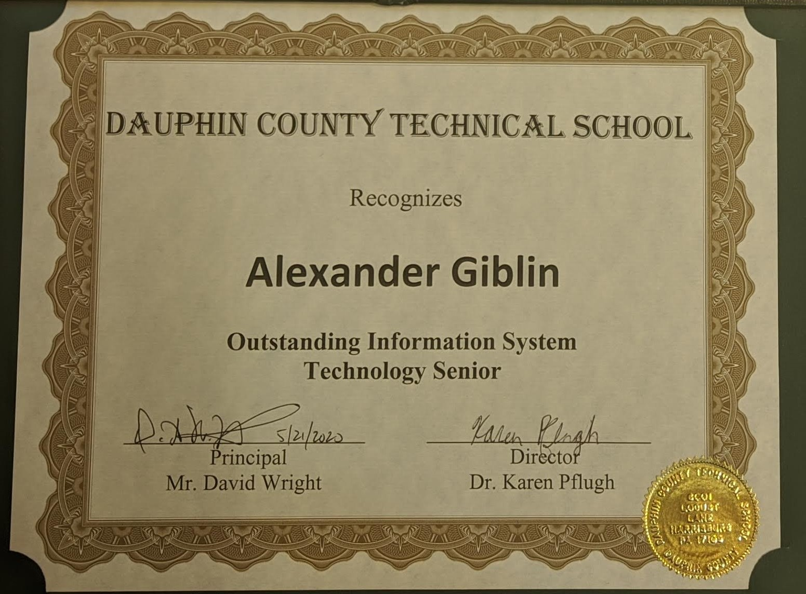

About Me
My name is Alexander Giblin; however, I prefer to be called AJ. I am Harrisburg, PA born and raised and started my journey into the world of Information Systems and Information Technology at a very young age. I remember my dad handing a young me his iPod and telling me if I can fix it I can keep it. I haven't stopped learning, fixing, developing, and operating technology and systems sense. I built my first computer around the age of 12 and was swept away at how amazing the results that even the most simple tasks can provide. For high school, I enrolled in my local technical school to study in their Information Systems Technology course (now referred to as their Computer Networking Technology course). I graduated from DCTS with the honor of being the IST Shop Class valedictorian.  I then decided to further my education by enrolling at Harrisburg University Of Science and Technology, where I am currently, with an expected graduation date of Spring 2024. In my work life, I value Honesty, Integrity, Professionalism, Experience, Perceptivity, Good Listening, Punctuality, Responsibility, Reliability, and Hard Work. I have applied those values to many different jobs throughout my life. From 2017 until 2019 I was a volunteer at my high school's student-run help desk, in 2019 I volunteered at Pennstate Hershey Medical Center to help organize and file physical and digital work. From 2019 through 2022 I worked in a few different pizza shops and food courts which taught me many of my customer service and good business traits. While in college I've been a student ambassador assisting both undergrad and graduate students and helping the school run events. My education and experience have given me many opportunities to learn, some of my personal favorite specialties are building computers, computer networking, repairing electronics, working a helpdesk, customer service, CSS, HTML, Linux, Mac, Windows, server administration, and many more.  I love my work and the things I can learn and contribute; however, working has allowed me to appreciate my free time where I do all sorts of different things. In my free time, I love reading about and listening to new technologies and learning how I can implement them into my workflow. Some of my other personal hobbies include astronomy, photography, cooking, playing guitar, hiking, going to concerts, and hanging out with old friends. Needless to say, This world has vast information to learn and endless things to do, and I intend to do as many of those things as humanly possible.
I love my work and the things I can learn and contribute; however, working has allowed me to appreciate my free time where I do all sorts of different things. In my free time, I love reading about and listening to new technologies and learning how I can implement them into my workflow. Some of my other personal hobbies include astronomy, photography, cooking, playing guitar, hiking, going to concerts, and hanging out with old friends. Needless to say, This world has vast information to learn and endless things to do, and I intend to do as many of those things as humanly possible.
I love my work and the things I can learn and contribute; however, working has allowed me to appreciate my free time where I do all sorts of different things. In my free time, I love reading about and listening to new technologies and learning how I can implement them into my workflow. Some of my other personal hobbies include astronomy, photography, cooking, playing guitar, hiking, going to concerts, and hanging out with old friends. Needless to say, This world has vast information to learn and endless things to do, and I intend to do as many of those things as humanly possible.
Eager to Learn More About Me? Click Here to Check Out My LinkedIn